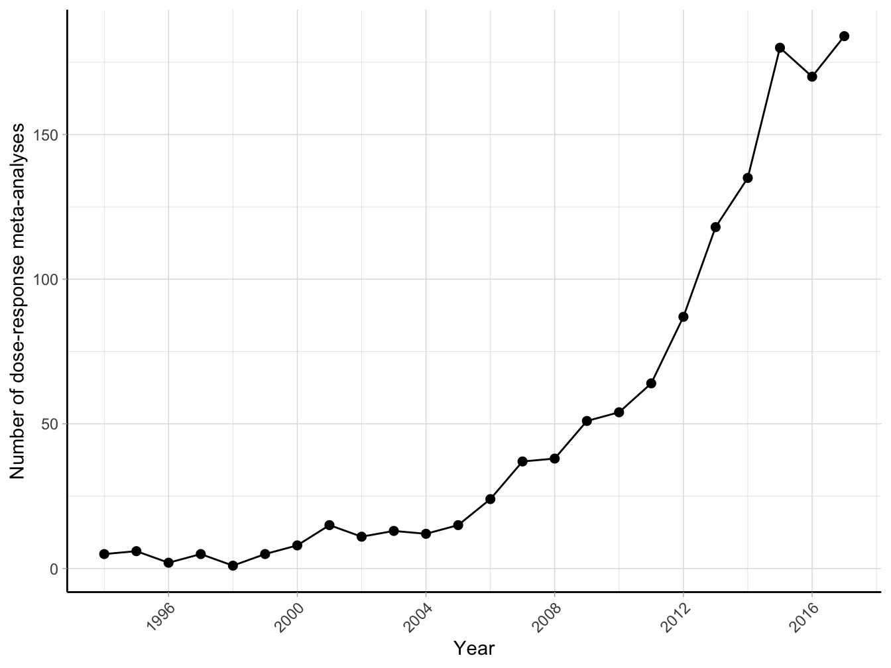
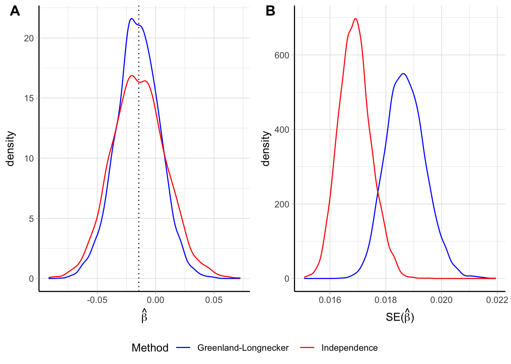
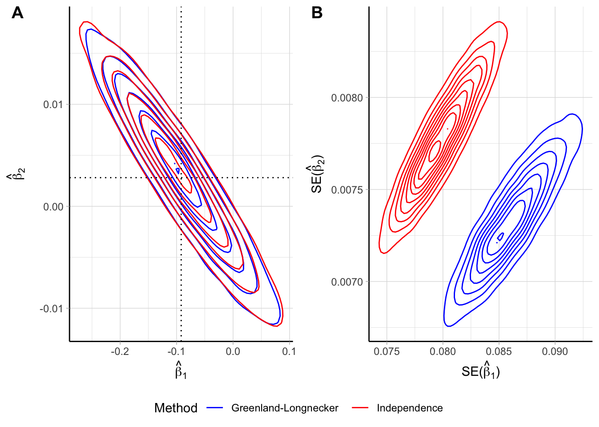

Chapter 2 Background
2.1 Meta-analysis
Relevant research questions are typically addressed by independent investigators in multiple studies. Sampling error and possibly differences in the investigations will inevitably produce diverse results, sometimes even conflicting. Evidence-based medicine requires a synthesis of the available evidence to optimize the decision-making process (Haidich, 2010).
Meta-analysis, or more generally quantitative review synthesis, is the statistical methodology for integrating and synthetizing the information arising from multiple studies (Borenstein, Hedges, Higgins, & Rothstein, 2009). Using appropriate statistical models, quantitative reviews contrast and pool results in the hope of identifying similarities and explaining differences across study findings. Meta-analysis represents the state of the art for systematically reviewing the evidence, as indicated by the increasing number of published meta-analyses over the last 40 years (Figure 2.1).
The classical approach for meta-analysis consists of an inverse variance weighted average of the study-specific results or estimates. A fixed-effect model for meta-analysis assumes that all the studies estimate a single common parameter (Rice, Higgins, & Lumley, 2017). The hypothesis of homogeneity of the estimates is rarely applicable in biomedical and social sciences where studies typically differ in terms of design, disease classification, exposure measurement, and implemented statistical analyses (Colditz, Burdick, & Mosteller, 1995). In such cases, heterogeneity across estimates is expected and should be considered in the analysis (J. P. Higgins, 2008). If the parameters estimated in the studies are not identical but related, a random-effects models can be used to identify those similarities or to explain the observed heterogeneity (J. Higgins, Thompson, & Spiegelhalter, 2009).
Figure 2.1: Number of publications about meta-analysis (results from Medline search using text “meta-analysis” until January 2018).
2.1.1 Random-effects meta-analysis
In a meta-analysis of \(I\) studies indexed by \(i = 1, \dots, I\), we denote \(\hat \beta_i\) the estimate of an effect of interest (effect size) in the \(i\)-th study. A random-effects model for meta-analysis can be written as \[\begin{equation} \hat \beta_i = \beta + b_i + \varepsilon_i \tag{2.1} \end{equation}\] where \(\beta\) is the underlying mean effect, oftentimes the main parameter of interest. The random-effects \(b_i\) represent the study-specific deviations from the mean effect \(\beta\) and is assumed to follow a generic distribution \(f\) with mean 0 and variance equal to \(\tau^2\), the between-studies heterogeneity. The within-study error components \(\varepsilon_i\) have also mean 0 and variance equal to \(\hat v_i\), an estimate of the sampling variance of \(\hat \beta_i\). Because the sample size in the individual investigations is often large, the uncertainty around the estimates of the sampling variance is negligible. Therefore, \(\hat v_i\) can be considered fixed and denoted as \(v_i\). In addition, for the central limit theorem, \(\varepsilon_i \sim \mathcal{N}\left(0, v_i \right)\), or alternatively, \(\hat \beta_i | b_i \sim \mathcal{N}\left(\beta+b_i, v_i \right)\).
An inverse variance-weighted approach for meta-analysis estimates the mean effect \(\beta\) as a weighted average of the study-specific effects \(\hat \beta_i\) DerSimonian & Laird (1986) \[\begin{align} \hat \beta &= \frac{\sum_{i = 1}^I \hat \beta_i \hat w_i}{\sum_{i = 1}^I \hat w_i} \tag{2.2} \\ \widehat{\textrm{Var}} \left(\hat \beta \right) &= \left( \sum_{i = 1}^I \hat w_i \right)^{-1} \tag{2.3} \end{align}\] with weights \(\hat w_i = \left(v_i + \hat \tau^2 \right)^{-1}\) and \(\hat \tau^2\) being an estimate of the between-study heterogeneity.
2.1.2 Test and estimates of heterogeneity
A second parameter of interest, often overlooked, is the between-study heterogeneity, \(\tau^2\). Focusing on the mean effect alone may provide only a limited piece of information, especially in case of heterogeneous effects (Borenstein, Hedges, Higgins, & Rothstein, 2010). Indeed, an evaluation of the extent of heterogeneity is a crucial step in determining the appropriateness of presenting a summary measure of the observed effect sizes.
Presence of heterogeneity is frequently defined as the excess in the variability of \(\hat \beta_i\) above that expected alone by chance. A summary measure of the observed variability is represented by the \(Q\) statistic \[\begin{equation} Q = \sum_{i=1}^I \left(\hat \beta_i - \hat \beta_{\text{fe}} \right)^2 v_i^{-1} \tag{2.4} \end{equation}\] where \(\hat \beta_{\text{fe}} = \sum_{i=1}^I \hat \beta_i v_i^{-1}/ \sum_{i=1}^I v_i^{-1}\) is the estimate of \(\beta\) in a fixed-effect model. Based on this statistic, Cochran (1954) developed a test for assessing the hypothesis of homogeneity of the study-specific estimates. Under the null hypothesis of no heterogeneity (\(H_0: \tau^2 = 0\)) the \(Q\) statistic follows a \(\chi^2\) distribution with \(I-1\) degrees of freedom (df). A \(p\) value less than 0.10 is often used as a cut point for testing presence of between-studies variability. It is known, however, that the test is sensitive to the number of studies, failing to reject the null hypothesis even for high value of \(\tau^2\) when \(I\) is small and rejecting \(H_0\) for negligible between-studies variation when \(I\) is big Takkouche, Cadarso-Suárez, & Spiegelman (1999). Therefore, failing to reject the null hypothesis does not provide evidence supporting homogeneity in the effect sizes (Biggerstaff & Tweedie, 1997). In addition, the dichotomization heterogeneous/homogeneous is not very informative, especially because heterogeneity is almost always present (J. P. Higgins, 2008).
An estimate of \(\tau^2\), instead, directly provides information about the amount of heterogeneity and is thus the most natural measure of between-studies variability. Based on the expectation of \(Q\), DerSimonian & Laird (1986) proposed the following estimator for \(\tau^2\) using the method of moments \[\begin{equation} \hat \tau^2_{\text{DL}} = \max \left\{0, \frac{Q - (I-1)}{\sum_{i=1}^I v_i^{-1} - \sum_{i=1}^I v_i^{-2}/\sum_{i=1}^I v_i^{-1} } \right\} \tag{2.5} \end{equation}\] The moment-based estimator is one of the most popular estimators of \(\tau^2\) because it has a simple non-iterative formulation and does not require any distributional assumption for the random-effects. This estimator only assumes a finite first order moment. Other common non-iterative alternatives include estimators based on the variance components (Hedges, 1983) and on methods for estimating the error variance in weighted linear models (Sidik & Jonkman, 2005). Iterative methods based on maximizing the likelihood or restricted likelihood can also be used by specifying a distributional form for the random-effects. The more conventional choice is typically a normal distribution \(b_i \sim \mathcal{N}\left( 0, \tau^2 \right)\), which implies \(\beta_i \sim \mathcal{N}\left(\beta, \tau^2 \right)\) and \(\hat \beta_i \sim \mathcal{N}\left(\beta + b_i, \tau^2 + v_i \right)\).
Although \(\tau^2\) is the more natural and appropriate measure of between-study variability, the actual value is difficult to interpret because it depends on type of effect size (e.g. log relative risk, standardized mean difference) and has no upper limit. Therefore, both evaluation of the degree (or levels) and the comparison of heterogeneity in different meta-analyses can hardly be based on the estimate of \(\tau^2\) alone.
2.1.3 Measures of heterogeneity
To complement the test-based approach and the information provided by \(\hat \tau^2\), measures that quantify the impact of heterogeneity have been proposed (J. Higgins & Thompson, 2002). J. Higgins & Thompson (2002) presented several possibilities in the simpler case where all the sampling variances \(v_i\) are equal to a fixed and known value \(\sigma^2\).
Two measures aim to estimate the ratio \(\sigma^2/(\sigma^2 + \tau^2)\), namely the \(H^2= Q/(I-1)\) that represents the excess in \(Q\) statistic relative to its degrees of freedom, and \(R^2 = \textrm{Var}\left(\hat \beta\right)/\textrm{Var}\left(\hat \beta_{\text{fe}}\right)\) which describes the inflation in the variability of the mean effect in a random-effects model compared with a fixed-effect analysis. Other measures, instead, relate the between-studies heterogeneity, \(\tau^2\), to the marginal or unconditional variability \(\tau^2 + v_i\), which is defined by the sum of within- and between-study components. These measures can be more easily interpreted as the percentage of the total variability due to heterogeneity, similar to the Intraclass Correlation Coefficient (ICC) defined for random intercept linear models. These measures directly involve the within-terms \(v_i\) that generally varies across the studies. The most popular measures, namely the \(\hat R_I\) (Takkouche et al., 1999) and the \(I^2\) (J. Higgins & Thompson, 2002), replaced \(v_i\) with a statistic in order to summarize the observed distribution.
Takkouche et al. (1999) chose \[\begin{equation} s_1^2 = \frac{I}{\sum_{i=1}^I v_i^{-2}} \tag{2.6} \end{equation}\] that is the harmonic mean of the inverse of the sampling variances. J. Higgins & Thompson (2002), instead, described the “typical” within-study variance as \[\begin{equation} s_2^2 = \frac{(I-1) \sum_{i=1}^I v_i^{-2}}{ \left( \sum_{i=1}^I v_i^{-2} \right)^2 - \sum_{i=1}^I v_i^{-4}} \tag{2.7} \end{equation}\] that provided a direct relationship with the \(Q\) statistic when \(\tau^2\) is estimated using the method of moments: \(I^2 = (Q - (I-1))/Q\).
Both statistics can be expressed as a percentage where 0% corresponds to no heterogeneity and increasing values imply higher levels of heterogeneity. It is known that these measures depend on the precision of the study-specific estimates and tend to increase to 100% when the \(v_i\) are much smaller than the estimated \(\tau^2\) J. Higgins & Thompson (2002). A complementary measure is the between-studies coefficient of variation, defined as \(\tau^2/|\hat \beta|\), that does not directly depend on the within-study variances. However, it increases quickly as \(\hat \beta\) becomes smaller, and is not defined for \(\hat \beta = 0\).
2.2 Categorical models for dose–response analysis
Epidemiological studies often assess the strength and direction of the association between exposures and the occurrence of a health outcome. When the exposure of interest is measured on a continuous scale, the additional information on the shape of the relationship is mostly of interest. Investigating how the outcome risk varies throughout the exposure range can provide insights on the causal mechanism (Hill, 1965). Different patterns can be identified such as an increased/decreased outcome risk for increasing values of the exposure or a threshold effect.
A common approach in epidemiology is to include the continuous variable as covariate in an appropriate statistical model. By doing so, the outcome risk is assumed to linearly depend on the covariate. A frequent alternative is to divide the quantitative exposure in categories. Possible advantages of such a categorical approach is that it relaxes the linearity assumption and facilitates the interpretation of the estimated regression coefficients. In addition, the results can be easily presented in a tabular format (Orsini, Greenland, et al., 2011).
A recent survey among top medical and epidemiological journals estimated that categorization occurred 86% of the times while a linear trend was reported 56% of the times (Turner, Dobson, & Pocock, 2010).
2.2.1 Aggregated dose–response data
In a categorical approach the quantitative exposure is divided in \(J+1\) categories. The corresponding indicator or dummy variables index by \(j = 1, \dots, J\) are included in the model in place of the exposure variable. The results from such a categorical dose–response analysis are expressed as relative measures of association using one category (corresponding to the omitted dummy variable) as referent. Depending on the study-design and on the statistical model, the results consist of estimated odds ratios, rate ratios, or risk ratios (generally referred to as relative risks (RRs)) for the different exposure categories, possibly adjusted for potential confounders. The corresponding 95% confidence intervals (CI) \(\widehat{\mathrm{RR}}_L, \widehat{\mathrm{RR}}_U\) provide information on the uncertainty related to the estimated regression coefficients. Additional information about the assigned dose (mean or median within exposure intervals), the number of cases and the total number of subjects or person-time usually complements the reported results. The general structure and notation for aggregated or summarized dose–response data are presented for a generic \(i\)-th study in Table 2.1. The subscript \(i\) in \(J_i\) highlights that independent studies may categorize the continuous exposure using different number of categories.
| Exposure level | Assigned dose | Cases | n | \(\widehat{\mathrm{RR}}\) | 95% CI |
|---|---|---|---|---|---|
| 0 | \(x_{i0}\) | \(c_{i0}\) | \(n_{i0}\) | \(1\) | — |
| 1 | \(x_{i1}\) | \(c_{i1}\) | \(n_{i1}\) | \(\widehat{\mathrm{RR}}_{i1}\) | \(\widehat{{\mathrm{RR}}}_{Li1}, \widehat{{\mathrm{RR}}}_{Ui1}\) |
| \(\vdots\) | |||||
| \(\mathrm{J_i}\) | \(x_{iJ_i}\) | \(c_{iJ_i}\) | \(J_{iJ_i}\) | \(\widehat{\mathrm{RR}}_{iJ_i}\) | \(\widehat{{\mathrm{RR}}}_{LiJ_i}, \widehat{{\mathrm{RR}}}_{UiJ_i}\) |
The effect sizes considered in a meta-analysis of multiple aggregated dose–response data consist of the estimated log \(\widehat{\mathrm{RR}}\)s and the corresponding standard errors that can be easily derived from the data available in Table 2.1 \[\begin{equation} \widehat{\textrm{SE}} \left( \log \widehat{\mathrm{RR}} \right) = \frac{\log \left(\widehat{\mathrm{RR}}_U \right) - \log \left(\widehat{\mathrm{RR}}_L \right)}{2\; z_{1- \alpha/2}} %\tag{2.8} \end{equation}\] where \(z_{1- \alpha/2}\) is the \(1- \alpha/2\) quantile of a standard normal distribution, usually approximated to 1.96 for the common \(\alpha\) = 5% level.
The statistical model relate the effect of the exposure categories on a transformation of the mean outcome. Typically, these transformations involve the natural logarithm such as the log odds, log risk, or log rate. The estimated regression coefficients are then exponentiated for ease of interpretation but the inference is actually performed on the modelling scale. Therefore, the effect sizes considered in a meta-analysis of multiple aggregated dose–response data consist of the estimated log \(\widehat{\mathrm{RR}}\)s and the corresponding standard errors that can be easily derived from the data available in Table 2.1
\[\begin{equation*} \widehat{\mathrm{SE}}\left( \log \widehat{\mathrm{RR}} \right) = \frac{\log \left(\widehat{\mathrm{RR}}_U \right) - \log \left(\widehat{\mathrm{RR}}_L \right)}{2 z_{1- \alpha/2}} %\tag{2.8} \end{equation*}\]
where \(z_{1- \alpha/2}\) is the \(1- \alpha/2\) quantile of a standard normal distribution, usually approximated to 1.96 for the common \(\alpha\) = 5% level.
A distinctive feature of aggregated dose–response data is the correlation among the (log) \(\widehat{\mathrm{RR}}\)s, which arises from the fact that they are estimated using a common reference group. Each \(\widehat{\mathrm{RR}}\) has the same baseline risk as denominator that works as comparator. If the observed baseline risk happens to be high or low just by chance, the estimated \(\widehat{\mathrm{RR}}\)s will be also higher or lower than expected (Schmid, Lau, McIntosh, & Cappelleri, 1998). This adds complexity in evaluating a trend from a categorical dose–response analysis or in directly comparing results based on different baseline categories.
2.2.2 High vs. low and categorical meta-analysis
A common approach for synthetizing the information from multiple aggregated dose–response data is to limit the analysis to a subset of the available results. In particular, a high- versus-low meta-analysis focuses on the results for the extreme exposure categories (Yu, Schmid, Lichtenstein, Lau, & Trikalinos, 2013). By selecting only the last row of the aggregated dose–response data, the meta-analytic models discussed in section 2.1.1 are used for combining and contrasting the results, with \(\hat \beta_i = \log \widehat{\mathrm{RR}}_{iJ_i}\).
The major limitation of a high- versus-low approach is that only a subset of the data is analyzed, while the remaining information about intermediate exposure categories is excluded from the analysis. As a consequence, much of the information about the shape of the dose–response is lost and the power of detecting an association may dramatically decrease. For example, in cases where only moderate exposure values have a lower or higher outcome risk, e.g. U-shaped associations, a high- versus-low approach would wrongly conclude that there is no relationship between the exposure and the health outcome.
In addition, in a high- versus-low analysis, the highest and the lowest category may be associated to a different exposure value in the studies included in the meta-analysis. To limit the impact of heterogeneous category definitions, practitioners should carefully plan the analysis by selecting the \(\widehat{\mathrm{RR}}\)s for exposure categories whose definition is more consistent across studies. If the choice of baseline category also substantially differs, the \(\widehat{\mathrm{RR}}\)s can be re-expressed using an alternative reference category implementing dedicated methodologies (Hamling, Lee, Weitkunat, & Ambühl, 2008).
An alternative remedy, although less common, is to conduct a categorical meta-analysis, which consists of separate univariate meta-analyses pooling the results from comparable exposure categories. A dose–response association is then deducted from observing the combined \(\widehat{\mathrm{RR}}\)s for increasing dose levels. Apart from evident difficulties in identifying \(\widehat{\mathrm{RR}}\)s for homogeneous exposure intervals in applied works, this approach does not take into account the correlations across set of log \(\widehat{\mathrm{RR}}\)s and suffers from the same problem of guessing a trend from a categorical dose–response analysis.
2.3 Dose–response meta-analysis
The aim of a dose–response meta-analysis is to make inference about the shape of the association from multiple aggregated dose–response data. As compared to the previous strategies, it has the advantages of using all the information available and the potential to be more informative. By describing the variation of the outcome over the entire exposure range, a dose–response meta-analysis allows one to answer the following questions:
- Is there any association between increasing dose levels and the outcome? If so, what is the shape of the relationship?
- Which exposure values are associated with the minimum or maximum response?
- Is there any difference in the study-specific dose–response associations across studies? Which factors can explain the observed heterogeneity?
The statistical problems for modelling sets of correlated relative risks in a dose–response analysis were first presented by Greenland & Longnecker (1992). Their seminal paper is now a standard reference for applied works. The number of published dose–response meta-analyses increased exponentially from 9 in 2000 to 172 in 2016 (Figure 2.2). The most popular research fields of application include oncology, environmental and public health, nutrition epidemiology, and general internal medicine. Dose–response meta-analyses are published in many leading medical and epidemiological journals, including JAMA, Lancet, Stroke, Gastroenterology, American J of Medicine, American J of Clinical Nutrition, American J Epidemiology, International J Epidemiology, Journal National Cancer Institute, International J of Cancer, Statistics in Medicine and many others. The method is also routinely used by international organizations such as the World Cancer Research Fund and American Institute for Cancer Research for reviewing the evidence on the relations between life-style factors (e.g. diet and physical activity) and cancer. Guidelines based on these quantitative reviews are central to promote the overall health and prevent many chronic diseases.

Figure 2.2: Number of citations of the paper by Greenland and Longnecker (1992) obtained from Google Scholar 1992-2017 (until January 2018).
The common approach for dose–response meta-analysis consists of a two-stage procedure, where the regression coefficients for the study-specific trends are first estimated separately within each study, and then combined using meta-analysis. In the next sections I cover the main methodological aspects related to each stage of the analysis.
2.3.1 First stage: study-specific trends
If we had access to the individual participant data (IPD), the dose–response model for a simple linear trend could be written as \[\begin{equation} \log \left( \lambda \left(x, \mathbf{c} \right) \right) = \beta_0 + \beta_1x + \boldsymbol{\gamma}^\top \mathbf{c} \tag{2.9} \end{equation}\] where \(x\) is the quantitative exposure and \(\mathbf{c}\) the set of possible confounders. The outcome variable is the log transformation of the mean outcome (e.g. odds, risk, or rate). Transformations of the exposure variable can be included to relax the linearity assumption, such as a quadratic term \[\begin{equation} \log \left( \lambda \left(x, \mathbf{c} \right) \right) = \beta_0 + \beta_1x + \beta_2x^2 + \boldsymbol{\gamma}^\top \mathbf{c} \tag{2.10} \end{equation}\]
This thesis focuses on methods for estimating a dose–response relationship from a summary of the initial individual participant data. In particular, aggregated data from a categorical analysis can be often retrieved from published articles. The aim of the first stage of a dose–response meta-analysis is to estimate the \(\beta\) coefficients in Equation(2.9) and (2.10) using aggregated dose–response data. We consider the notation presented in Table 2.1 with \(i = 1, \dots, I\) indexing the studies and \(j = 1, \dots, J_i\) the non-referent dose levels of a generic \(i\)-th study. The corresponding two models can be written as
\[\begin{equation} \log \left( \widehat{\mathrm{RR}}_{ij} \right) = \log \left( \hat \lambda \left(x = x_{ij} \right) \right) - \log \left( \hat \lambda \left(x = x_{i0} \right) \right) = \beta_1\left(x_{ij} - x_{i0} \right) \tag{2.11} \end{equation}\]
\[\begin{equation} \log \left( \widehat{\mathrm{RR}}_{ij} \right) = \log \left( \hat \lambda \left(x = x_{ij} \right) \right) - \log \left( \hat \lambda \left(x = x_{i0} \right) \right) = \beta_1\left(x_{ij} - x_{i0} \right) + \beta_2\left(x_{ij}^2 - x_{i0}^2 \right) \tag{2.12} \end{equation}\]
More generally, the \(i\)-th dose–response model is defined as \[\begin{equation} \mathbf{y}_i = \mathbf{X}_i \boldsymbol{\beta}_i + \boldsymbol{\varepsilon}_i \tag{2.13} \end{equation}\]
The outcome \(\mathbf{y}_i\) is the \(J_i\) length vector of the non-referent log \(\widehat{\mathrm{RR}}\)s while \(\mathbf{X}_i\) the \(J_i \times p\) design matrix containing the \(p\) transformations of the assigned dose used to model the dose–response association \[\begin{equation} \mathbf{X}_i=\left[ \begin{array}{ccc} g_{1}(x_{i1}) - g_{1}(x_{i0}) & ... & g_{p}(x_{ip}) - g_{p}(x_{i0}) \\ \vdots & & \vdots \\ g_{1}(x_{iJ_i}) - g_{1}(x_{i0}) & ... & g_{p}(x_{iJ_i}) - g_{p}(x_{i0}) \\ \end{array} \right] \tag{2.14} \end{equation}\]
In the linear trend analysis (model (2.11), \(\mathbf{X}_i\) includes only the dose levels, \(p\) = 1, \(g_1(x) = x\) (identity function)
\[\begin{equation*} \mathbf{X}_i=\left[ \begin{array}{c} x_{i1} - x_{i0} \\ \vdots \\ x_{iJ_i} - x_{i0} \\ \end{array}% \right] \end{equation*}\]
while \(p = 2\) columns are needed in the quadratic model (2.10): \(g_1(x) = x\) and \(g_2(x) = x^2\)
\[\begin{equation*} \mathbf{X}_i=\left[ \begin{array}{cc} x_{i1} - x_{i0} & x_{i1}^2 - x_{i0}^2 \\ \vdots & \vdots \\ x_{iJ_i} - x_{i0} & x_{iJ_i}^2 - x_{i0}^2 \\ \end{array}% \right] \end{equation*}\]
A distinctive feature of the models (2.13) is the absence of the intercept term. The reference row in Table 2.1 is not actually used for the estimation of the regression coefficients but introduces the constraint on the predicted log \(\widehat{\mathrm{RR}}\), which needs to be 0 (\(\widehat{\mathrm{RR}}\) = 1) for the reference dose value \(x_{i0}\), as is explicit in models (2.11) and (2.12).
Approximation of the covariance between log \(\widehat{\mathrm{RR}}\)
A particular characteristic of summarized dose–response data is that the log \(\widehat{\mathrm{RR}}\)s are reported with different precision and are constructed using the same baseline group. Thus, the error terms \(\boldsymbol{\varepsilon}_i\) in Equation (2.13) are heterogeneous and correlated, with a covariance matrix structured as \[\begin{equation} \mathrm{Cov}\left(\boldsymbol{\epsilon}_i\right) = \mathbf{S}_i = \left[ \begin{array}{ccccc} \sigma_{i11} & \ \ & \ & & \ \\ \vdots \ & \ddots & & & \ \\ \sigma_{i1j}& \ & \sigma_{ijj}& & \ \\ \vdots & \ & \ & \ddots & \\ \sigma_{i1J_i} & \ldots & \sigma_{iJ_ij} & \ldots & \sigma_{iJ_iJ_i} \end{array} \right] \tag{2.15} \end{equation}\] with the variance of the log \(\widehat{\mathrm{RR}}\)s on the diagonal (\(\sigma_{ijj}\)) and the pairwise covariances as non-diagonal elements (\(\sigma_{ijj'}\)).
Two methods have been proposed to approximate the covariances \(\sigma_{ijj'}\) Hamling et al. (2008). Greenland and Longnecker described an algorithm to construct a table of pseudo or effective counts (number of cases and participants or person-time) that would produce the adjusted log \(\widehat{\mathrm{RR}}\)s as those published. A unique solution for the algorithm is ensured by keeping the margins of the pseudo-counts equal to the observed ones. Alternatively, Hamling et al. modified the previous algorithm in such a way that the pseudo-counts would also match the standard errors of the log \(\widehat{\mathrm{RR}}\)s.
Estimation
The dose–response coefficients \(\boldsymbol{\beta}_i\) can be efficiently estimated using generalized least squares estimator (GLS), which minimizes the quadratic loss function \(\left(\mathbf{y}_i- \mathbf{X}_i \boldsymbol{\beta}_i \right)^\top \mathbf{S}_i^{-1} \left(\mathbf{y}_i- \mathbf{X}_i \boldsymbol{\beta}_i \right)\) with respect to \(\boldsymbol{\beta}_i\) assuming the covariance matrix \(\mathbf{S}_i\) known \[\begin{equation} \begin{gathered} \boldsymbol{\hat \beta}_i = ( \mathbf{X}_i^\top \mathbf{S}_i^{-1} \mathbf{X}_i)^{-1} \mathbf{X}_i^\top \mathbf{S}_i^{-1} \mathbf{y}_i \\ \widehat{\textrm{Var}} \left( \boldsymbol{\hat \beta}_i \right) = ( \mathbf{X}_i^\top \mathbf{S}_i^{-1} \mathbf{X}_i)^{-1} \end{gathered} \tag{2.16} \end{equation}\]
The GLS estimates in Equation (2.16) do not require any distributional assumption for the error terms. However, for the central limit theory, the error terms follow approximately a normal distribution \(\boldsymbol{\epsilon}_i \sim \mathcal{N}\left(\mathbf{0}, \mathbf{S}_i \right)\). Using this additional assumption, the log-likelihood of model (2.13) is \[\begin{equation} \ell\left(\boldsymbol{\beta}_i\right) = -\frac{J_i}{2}\log\left(2\pi\right) - \frac{1}{2}\log|\mathbf{S}_i| - \frac{1}{2} \left[\left(\mathbf{y}_i- \mathbf{X}_i \boldsymbol{\beta}_i \right)^\top \mathbf{S}_i^{-1} \left(\mathbf{y}_i- \mathbf{X}_i \boldsymbol{\beta}_i \right) \right] \tag{2.17} \end{equation}\]
Interestingly, the maximum likelihood (ML) estimates that maximize the log-likelihood \(\ref{eq:drmodel_logLik}\) coincides with the GLS estimates in (2.16) (Orsini, Bellocco, Greenland, et al., 2006). Introducing the normality distribution for the random errors facilitates the inference, i.e. test of hypothesis and confidence intervals, on the \(\boldsymbol{\beta}_i\) coefficients. The estimates in (2.16) are a linear combination of normal distributions, \(\mathbf{y}_i \sim \mathcal{N}\left(\mathbf{X}_i \boldsymbol{\beta}_i, \mathbf{S}_i \right)\), and therefore are also normally distributed \(\boldsymbol{\hat \beta}_i \sim \mathcal{N}\left( \boldsymbol{\beta}_i, {\textrm{Var}} \left( \boldsymbol{\hat \beta}_i \right)\right)\).
The ML and GLS estimators give unbiased estimates of \(\boldsymbol{\beta}_i\) regardless of the specification of \(\mathbf{S}_i\) (Orsini et al., 2006). As a consequence, a weighted least squares estimator (WLS) that assumes independence of the log \(\widehat{\mathrm{RR}}\)s will also produce unbiased estimates. However, taking into account the correlation will improve the efficiency of the estimator. I investigated the differences between the GLS and WLS estimators using a simulation study of 5000 aggregated dose–response data where the true trends were linear (\(\beta_\text{TRUE} = -0.014\)). As expected, both the estimators were unbiased but the empirical distribution of the GLS estimator was more concentrated around the true \(\beta\) value (Figure 2.3). The empirical distributions of the estimated standard errors were shifted, with the mean standard error for the WLS estimates being 10 lower than the corresponding GLS value. This had a direct effect on the inference for the estimated linear trend. For instance, it may be interesting to fit a quadratic curve as in (2.12) and test the hypothesis \(H_0: \beta_2 = 0\), i.e. departure from a linear trend. Using inference based on WLS estimators the null hypothesis were wrongly rejected 3.96% of the time, lower than the nominal level \(\alpha = 5\)%. The corresponding number for the GLS estimator was instead closer to the specified rejection rate (4.8%).

Figure 2.3: Empirical distribution of the \(\hat \beta\) (panel A) and \(\widehat{\textrm{Var}} \left( \hat \beta_i \right)\) (panel B) for a linear trend assuming independence of the log \(\widehat{\mathrm{RR}}\) and reconstructing the covariances using the Greenland and Longnecker’s method. Results are based on simulations with 5000 replications and a true linear trend \(\beta\) = -0.014.
I also implemented simulations assuming a quadratic curve with the true coefficients \(\boldsymbol{\beta}_\text{TRUE} = (-0.092, 0.003)\). The empirical bivariate distributions of $ _i$ were centered around the true parameter, with levels curve more concentrated for the GLS estimates (Figure 2.4). Similarly to the linear trend simulations, the distributions of the estimates of the standard errors for the two estimators where shifted, with the mean of \(\widehat{\textrm{SE}} \left( \hat \beta_1 \right)\) and \(\widehat{\textrm{SE}} \left( \hat \beta_2 \right)\) being 7% lower and 6% higher, respectively, when comparing WLS to GLS estimates.

Figure 2.4: Empirical bivariate distribution of the beta coefficients (panel A) and their standard errors (panel B) for a quadratic trend assuming independence of the log \(\widehat{\mathrm{RR}}\) and reconstructing the covariances using the Greenland and Longnecker’s method. Results are based on simulations with 5000 replications and a true quadratic trend \(\beta_{1}\) = -0.092, \(\beta_{2}\) = 0.003.
2.3.2 Second stage: multivariate meta-analysis
The study-specific dose–response curves are defined by the \(p\) transformations, \(g_1(x), \dots, g_p(x)\), and the estimated regression coefficients \(\boldsymbol{\hat \beta}_i\). A pooled dose–response can be obtained by combining the \(\boldsymbol{\hat \beta}_i\) coefficients. For that purpose, the same functional relationship needs to be defined across the studies. Therefore, the transformations of the exposure were not subscripted by the study index \(i\).
The \(p\) length vector of the \(\boldsymbol{\hat \beta}_i\) parameters and the accompanying \(p \times p\) covariances matrices \(\widehat{\textrm{Var}} \left( \boldsymbol{\hat \beta}_i \right)\) serve as outcome in the meta-analytic model. We consider the setting with \(p \ge 2\) and relate the univariate case as a simpler instance of the more general multivariate case. Since the dimension of the outcome is no longer univariate, extensions of models (2.1) to the multivariate settings can be implemented for accommodating the synthesis of correlated estimates Ritz, Demidenko, & Spiegelman (2008).
Model definition
A multivariate random-effects model has a similar formulation as in the univariate case \[\begin{equation} \boldsymbol{\hat \beta}_i = \boldsymbol{\beta} + \mathbf{b}_i + \boldsymbol{\varepsilon}_i \tag{2.18} \end{equation}\] The unobserved random effects \(\mathbf{b}_i\) are now of dimension \(p\), still representing study-specific deviation from the mean \(\boldsymbol{\beta}\) parameter. As before, \(\textrm{E}\left[\mathbf{b}_i\right] = \mathbf{0}\) and \(\textrm{Var}\left[\mathbf{b}_i\right] = \boldsymbol{\Psi}\), the \(p \times p\) between-study variance matrix. Specification of a parametric distribution for the random-effects may facilitate the inference (especially confidence intervals) and improve the prediction of marginal and conditional dose–response associations. Typically a multivariate normal distribution is assumed \(\mathbf{b}_i \sim \mathcal{N}\left(\mathbf{0}, \boldsymbol{\Psi} \right)\). Hence, we can write the marginal model of (2.18) as \[\begin{equation} \boldsymbol{\hat \beta}_i \sim \mathcal{N}\left(\boldsymbol{\beta}, \boldsymbol{\Sigma}_i \right) \tag{2.19} \end{equation}\] where the marginal variance \(\boldsymbol{\Sigma}_i = \widehat{\textrm{Var}} \left( \boldsymbol{\hat \beta}_i \right) + \boldsymbol{\Psi}\) is defined by the sum of the within-study and between-studies variance components. The model (2.19) implies a two-stage sampling procedure where the study-specific \(\boldsymbol{\beta}_i\) parameters are assumed to be sampled from a multivariate normal distribution centered around the population average parameter \(\boldsymbol{\beta}\). The study-specific estimates \(\boldsymbol{\hat \beta}_i\) are themselves sampled from a multivariate distribution with zero mean and error variance.
The multivariate random-effects model (2.19) can be extended to meta-regression models by including study-levels covariates that might change the shape of the dose–response relationship. The dose–response coefficients are then modeled as a linear combination of the \(m\) study-level covariates \(\mathbf{u}_i = \left(u_{i1}, \dots, u_{im} \right)\), with \(u_{i1} = 1\) representing the intercept term \[\begin{equation} \boldsymbol{\hat \beta}_i \sim \mathcal{N}\left(\widetilde{\mathbf{X}}_i \boldsymbol{\beta}, \boldsymbol{\Sigma}_i\right) \tag{2.20} \end{equation}\] The \(p\times pm\) design matrix \(\widetilde{\mathbf{X}}_i\) is constructed taking the Kronecker product between the \(\mathbf{u}_i\) and the identity matrix of dimension \(p\), \(\mathbf{I}_{(p)}\) \[\begin{equation} \widetilde{\mathbf{X}}_i = \mathbf{I}_{(p)} \otimes \mathbf{u}_i^\top = \begin{bmatrix} 1 & u_{i2} & \cdots & u_{im} & \cdots & 0 & 0 & \cdots & 0 \\ \vdots & & & & \ddots & & & & \\ 0 & 0 & \cdots & 0 & \cdots & 1 & u_{i2} & \cdots & u_{im} \\ \end{bmatrix} \end{equation}\] For example, the \(\widetilde{\mathbf{X}}_i\) matrix relating the effect of a binary variable \(u_i\) to the dose–response coefficients for a quadratic trend is \[\begin{equation*} \widetilde{\mathbf{X}}_i = \mathbf{I}_{(2)} \otimes \mathbf{u}_i^\top = \begin{bmatrix} 1 & 0 \\ 0 & 1 \end{bmatrix} \otimes (1, u_i)= \begin{bmatrix} 1 & u_i & 0 & 0 \\ 0 & 0 & 1 & u_i \\ \end{bmatrix} \end{equation*}\]
The dimension of \(\boldsymbol{\hat \beta}\) is now \(p\times m\). The coefficients related to the intercept terms are interpreted as the mean dose–response coefficients when all the study-level covariates \(\mathbf{u}\) are equal to zero. The remaining coefficients indicate how the mean dose–response association varies with respect to the corresponding study-level covariate.
Estimation
Several methods are available for estimating the parameters of interest, namely the \(p \times m\) dose–response coefficients in \(\boldsymbol{\beta}\) and the \(p(p+1)/2\) length vector \(\boldsymbol{\xi}\) containing the elements on or above the diagonal of the between-studies covariance \(\boldsymbol{\Psi}\). There is generally no reason to assume a specific covariance structure (White et al., 2011). We consider here likelihood-based estimators Pinheiro & Bates (2010). In particular, ML estimators estimate simultaneously \(\boldsymbol{\beta}\) and \(\boldsymbol{\xi}\) by maximizing the log-likelihood of the marginal model (2.20) \[\begin{equation} \ell\left(\boldsymbol{\beta}, \boldsymbol{\xi} \right) = -\frac{1}{2}Ip\log(\pi) -\frac{1}{2}\sum_{i=1}^I \log |\boldsymbol{\Sigma}_i| - \frac{1}{2}\sum_{i=1}^I\left[ \left(\boldsymbol{\hat \beta}_i - \widetilde{\mathbf{X}}_i\boldsymbol{\beta} \right)^\top \boldsymbol{\Sigma}_i^{-1} \left(\boldsymbol{\hat \beta}_i - \widetilde{\mathbf{X}}_i\boldsymbol{\beta} \right) \right] \tag{2.21} \end{equation}\]
ML estimators, however, don’t take into account the loss of degrees of freedom due to the \(\boldsymbol{\beta}\) estimation (Harville, 1977). Alternatively, restricted maximum likelihood methods (REML) maximizes a set of contrasts defined as a function of the only covariance parameters \[\begin{equation} \begin{split} \ell_R\left(\boldsymbol{\xi} \right) =& -\frac{1}{2}\left(Ip - pm\right) -\frac{1}{2}\sum_{i=1}^I \log |\boldsymbol{\Sigma}_i| -\frac{1}{2}\sum_{i=1}^I \log \left|\widetilde{\mathbf{X}}_i^\top\boldsymbol{\Sigma}_i\widetilde{\mathbf{X}}_i \right| + \\ &- \frac{1}{2}\sum_{i=1}^I\left[ \left(\boldsymbol{\hat \beta}_i - \widetilde{\mathbf{X}}_i\boldsymbol{\beta} \right)^\top \boldsymbol{\Sigma}_i^{-1} \left(\boldsymbol{\hat \beta}_i - \widetilde{\mathbf{X}}_i\boldsymbol{\beta} \right) \right] \end{split} \tag{2.22} \end{equation}\]
Both estimation methods require iterative algorithms, where conditional estimates of \(\boldsymbol{\hat \beta}\) are plugged into either (2.21) or (2.22), regarded as function of \(\boldsymbol{\xi}\) only, until convergence. More details on the implementation of iterative methods for maximizing Equations \(\ref{eq:rmma_logLik}\) and (2.22) are described by Gasparrini et al. (2012).
Hypothesis testing, heterogeneity, and model comparison
There are two main domains of interest for making inference that relate either to the fixed-effects \(\boldsymbol{\beta}\) or the variance components in \(\boldsymbol{\Psi}\). Using the normality assumption for the random-effects, inference is based on the approximated normal distribution for \(\boldsymbol{\hat \beta}\), with mean and covariance matrix defined similarly as in Equation (2.16).
Since the mean dose–response association is defined by the \(\boldsymbol \beta\), the hypothesis of no association can be evaluated by testing \(H_0: \boldsymbol{\beta} = \boldsymbol{0}\). Alternatively, a subset or linear combinations of the elements in \(\boldsymbol \beta\) may be of interest. For example, in a quadratic trend the non-linearity is introduced by the quadratic term \(x^2\). Thus, testing \(H_0: \beta_2 = 0\) is a possible way for evaluating departure from a linear dose–response relationship.
As previously presented in section @ref(sec:het_rma), the coefficients defining \(\boldsymbol{\Psi}\) are not nuisance parameters rather they are useful for quantifying the variation of the study-specific associations \(\boldsymbol{\beta}_i\). Similar measures for testing and quantifying the impact of heterogeneity have been extended to the multivariate setting (Berkey, Anderson, & Hoaglin, 1996). In particular, the \(Q\) statistic \[\begin{equation} Q = \sum_{i=1}^I \left(\boldsymbol{\hat \beta}_i - \widetilde{\mathbf{X}}_i\boldsymbol{\hat \beta}_{\text{fe}}\right) ^\top \widehat{\textrm{Var}} \left( \boldsymbol{\hat \beta}_i \right)^{-1} \left(\boldsymbol{\hat \beta}_i - \widetilde{\mathbf{X}}_i\boldsymbol{\hat \beta}_{\text{fe}}\right) \tag{2.23} \end{equation}\] with \(\boldsymbol{\hat \beta}_{\text{fe}}\) estimated under a fixed-effect model is used to test \(H_0: \boldsymbol{\Psi} = \boldsymbol{0}\). Under the null hypothesis, the \(Q\) statistic follow a \(\chi^2\) distribution with \(Ip - pm\) degrees of freedom. When \(p = 1\) the formulations (2.4) and (2.23) coincide. The multivariate extension of the \(I^2\) was derived relating the \(Q\) statistics to its degrees of freedom \(I^2 = \max \left\{0, \frac{Q- (Ip - pm)}{Ip - pm}\right\}\) (Jackson, White, & Riley, 2012).
The fit of alternative non-nested meta-analytical models can be compared using information criteria indices such the Akaike information criterion (AIC), which is defined as \(\textrm{AIC} = -2 \ell\left(\boldsymbol{\beta}, \boldsymbol{\xi} \right) + 2k\), a descriptive measure depending on the maximum log-likelihood and \(k\), the number of estimated parameters. It is worth to note that the AIC can be used for comparing the fit of different analyses such as alternative meta-regression models. However, it is not clear if these indices can be used for comparing different dose–response models, such as linear vs non-linear.
Prediction
Interpretation of a single regression coefficient of \(\boldsymbol{\hat \beta}\) may be difficult. The dose–response findings are best communicated in a graphical form as predicted (log) relative risk for selected exposure levels using one value as referent. Obtaining predictions and presenting them either in a graphical or tabular form is an important step following the estimation of the model. Based on the model (2.18), the predicted \(\log RR\) for a dose level \(x_v\) relative to the level \(x_\mathrm{ref}\) can be calculated as \[\begin{align} \log \widehat{RR}(x_v \text{ vs } x_\mathrm{ref}) &= \mathbf{X}_v\boldsymbol{\hat \beta} \tag{2.24} \\ \textrm{Var} \left(\log \widehat{RR}(x_v \text{ vs } x_\mathrm{ref}) \right) &= \mathbf{X}_v \widehat{\textrm{Var}} \left( \boldsymbol{\hat \beta} \right) \mathbf{X}_v^\top \tag{2.25} \end{align}\] where \(\mathbf{X}_v\) is the design matrix evaluated in \(x_v\), as defined in the first-stage analysis (Equation (2.14)). For example, the predicted \(\log RR\) for the quadratic model \(\ref{eq:quadr_ad}\) comparing \(x_v\) versus \(x_\mathrm{ref}\) is \[\begin{equation*} \log \widehat{RR}(x_v \text{ vs } x_\mathrm{ref}) = \hat \beta_1 \left(x_v - x_\mathrm{ref} \right) + \hat \beta_2 \left(x_v^2 - x_\mathrm{ref}^2 \right) \end{equation*}\] Of note, the referent dose \(x_\mathrm{ref}\) is an arbitrary value and thus does not need to correspond to any of the study-specific reference values \(x_{i0}\).
A confidence interval for the predicted \(\log \widehat{RR}(x = x_v)\) is based on the normal distribution of \(\boldsymbol{\hat \beta}\) \[\begin{equation*} \log \widehat{RR}(x_v \text{ vs } x_\mathrm{ref}) \mp z_{1- \alpha/2} \textrm{Var} \left(\log \widehat{RR}(x_v \text{ vs } x_\mathrm{ref}) \right)^{\frac{1}{2}} (\#eq:pred_ci) \end{equation*}\]
Formulas (2.24) and (2.25) can be extended to meta-regression models. The predicted \(\log RR\) conditional on a specific study-level covariate pattern \(\mathbf{u} = \mathbf{u}_v\) is \[\begin{align} \log \widehat{RR}\left(x_v \text{ vs } x_\mathrm{ref}, \mathbf{u} = \mathbf{u}_v \right) &= \mathbf{X}_v \left(\mathbf{I}_{(p)} \otimes \mathbf{U}_v^\top \right) \boldsymbol{\hat \beta} \tag{2.26} \\ \textrm{Var} \left(\log \widehat{RR}\left(x_v \text{ vs } x_\mathrm{ref}, \mathbf{u}= \mathbf{u}_v \right) \right) &= \left( \mathbf{X}_v \mathbf{U}_v\right) \widehat{\textrm{Var}} \left( \boldsymbol{\hat \beta} \right) \left( \mathbf{X}_v \mathbf{U}_v\right)^\top \tag{2.27} \end{align}\]
Inference on study-specific dose–response associations can be enhanced by exploiting the information from the multivariate distribution for the random-effects. The best linear unbiased prediction (BLUP) for the study-specific regression coefficients \(\mathbf{b}_i\) is defined as \[\begin{equation} \boldsymbol{\hat b}_i = \boldsymbol{\Psi} \boldsymbol{\Sigma}_i^{-1} \left(\boldsymbol{\hat \beta}_i - \widetilde{\mathbf{X}}_i \boldsymbol{\hat \beta} \right) \tag{2.28} \end{equation}\] Study-specific predicted log relative risks can be obtained as in Equations (2.24) and (2.25) by replacing the mean parameter \(\boldsymbol{\hat \beta}\) with the individual dose–response coefficients \(\boldsymbol{\hat \beta} + \boldsymbol{\hat b}_i\)
2.3.3 History of previous methodological research
Dose–response meta-analysis has received attention not only in applied works but also in theoretical articles that covered different aspects of the methodology. Greenland & Longnecker (1992) originally presented the two-stage approach for efficiently estimating a linear trend in a fixed-effect analysis. An alternative model for estimating curvilinear model, referred to as “pool first”, was also presented. The technique consists of a one-stage approach where the aggregated data are considered altogether and a single model as in Equation (2.13) is fitted. By first combining the data, more flexible curve parametrized by multiple parameters (\(p \ge 2\)) can be estimated. The study-specific dose–response analyses are limited by the minimum number of non-referent log RRs across the studies. For example, if the aggregated data for a study consists of only one non referent log RR, only a univariate model with \(p = 1\) can be estimated. The authors refined the methodology by extending the two-stage approach to allow for heterogeneity limited to a linear trend analysis (Berlin, Longnecker, & Greenland, 1993).
Flexible dose–response models
The primary interest of the methodological research was in presenting alternative strategies for estimating non-linear curves. Bagnardi, Zambon, Quatto, & Corrao (2004) described the use of fractional polynomials and restricted cubic splines using aggregated dose–response data. Based on a practical example on the association between alcohol consumption and all-cause mortality, the authors showed how implementation of these flexible techniques may prevent misleading results from conventional polynomials (e.g. quadratic) curves. Second-degree fractional polynomials (FP2) consist of a large family of curves defined in the general form of \[\begin{equation} \mathrm{FP2}(x) = \beta_1 x^{p_1} + \beta_2x^{p_2} \tag{2.29} \end{equation}\] where \(p_1\) and \(p_2\) are chosen in the set of power coefficients \(\left\{-2, -1, -0.5, 0, 0.5, 1, 2, 3 \right\}\) Royston (2000). When \(p = 0\), \(x^p\) becomes \(\log(x)\), while if \(p_1 = p_2\) the second transformation of \(x\) becomes \(x^{p_2}\log(x)\). The advantage of FP2 models is that different shapes, including U- and J-shapes, can be estimated by only two coefficients chosen using different combinations for the power terms \((p_1, p_2)\). Typically, the best fitting fractional polynomial is chosen in such a way that the \((p_1, p_2)\) corresponds to the model with the highest likelihood, or equivalently, lowest deviance (Royston, 2001).
A popular alternative to flexibly model the dose–response association is represented by the use of splines (De Boor, De Boor, Mathématicien, De Boor, & De Boor, 1978), largely presented by Orsini, Li, Wolk, Khudyakov, & Spiegelman (2011) using data from the Pooling Project of Prospective Studies of Diet and Cancer (). Spline functions consist of consecutive polynomials connected at specific points of the exposure range called knots. Choosing \(\mathbf{k} = \left(k_1, \dots, k_K\right)\) knots and third order polynomials, the model, also known as cubic splines (CS), is defined as \[\begin{equation} \mathrm{CS}(x) = \beta_1 x + \beta_2x^2 + \beta_3x^3 + \sum_{l = 1}^{K-1} \beta_{l+3}(x - k_l)_{+}^3 \tag{2.30} \end{equation}\] where the “+” notation has been used (\(u_+ = u\) if \(u \ge 0\) and \(u_+ = 0\) otherwise). To avoid strange behaviors at the extremes of the exposure range, the model (2.30) is constrained to be linear before and after the first and last knots, respectively. For example, using the minimum number of three knots a restricted cubic spline model (RCS) can be specified in terms of two coefficients \[\begin{equation} \mathrm{RCS}(x) = \beta_1 x + \beta_2 \left[ \left( x - k_1 \right)_{+}^3 - \frac{k_3 - k_1}{k_3 - k_2} \left( x - k_2 \right)_{+}^3 + \frac{k_2 - k_1}{k_3 - k_2} \left(x - k_3 \right)_{+}^3\right] \tag{2.31} \end{equation}\] The second transformation is generally divided by \((k_3 - k_1)^2\) to improve the numerical behavior and to put the spline transformations on the same scale (Harrell Jr, 2015) (see Appendix A for the derivation of a RCS model).
The previous strategies have been often presented for exposures where 0 was the natural reference categories (e.g. alcohol consumption). Liu, Cook, Bergström, & Hsieh (2009) extended the methodology for handling non-zero reference categories, as in the case of Body Mass Index. In particular, they first described how to construct the design matrix in terms of contrasts, as clarified in Equation (2.14). Misspecification of the design matrix (e.g. \(\log \mathrm{RR} = \beta_1 (x_1 - x_0) + \beta_2 (x_1 - x_0)^2\) instead of \(\log \mathrm{RR} = \beta_1 (x_1 - x_0) + \beta_2 (x_1^2 - x_0^2)\)) may increase the risk of generating artifacts and misleading conclusions. Note that for zero exposure categories the problem is generally not relevant since many functions return zero for \(x = 0\) (\(g(0) = 0\)).
Multivariate meta-analysis
The major contribution for estimating non-linear curves in a random-effects analysis came with the extension of univariate meta-analytic models to the multivariate case. The formalization and implementation of multivariate meta-analysis enabled the extension of a two-stage dose–response meta-analysis to the more complex case of multiple parameters association (Gasparrini et al., 2012). The multivariate framework can accommodate the synthesis of correlated outcomes or estimates, as those derived in the first stage of a dose–response meta-analyses. The application of the strategies presented in (2.29) and (2.31) in a random-effects setting has been easily facilitated by the implementation of dedicated packages for multivariate meta-analysis Jackson, Riley, & White (2011). This is probably the reason why a one-stage approach for dose–response meta-analysis was no further extended.
The methodological advancements for meta-analysis were diverse and numerous (see Alexander J. Sutton & Higgins (2008) for an overview). Important improvements that directly affected how results are presented related mainly to the quantification and assessment of heterogeneity, with the definition of the measures presented in Section 2.1.3. In addition, many other articles enriched the set of tools for pooling study-specific effects, with a direct application to the second stage of a dose–response meta-analysis. Among the many, it is worth to mention the implementation of several estimation methods for the between-study variability (see Langan, Higgins, & Simmonds (2017) for a comparison based on simulation studies); advancement in performing meta-regression (Van Houwelingen, Arends, & Stijnen, 2002); proposal of sequential approaches (Pogue & Yusuf, 1997) and statistical power (Alexander J. Sutton et al., 2007); and introduction of Bayesian methods (Alex J. Sutton & Abrams, 2001).
Covariance and sensitivity analysis
Orsini et al. (2006) refined the initial formulas presented by Greenland and Longnecker for approximating the study-specific covariance matrices depending on the study-design. Berrington & Cox (2003) described an alternative method that avoids the reconstruction of the covariance matrices. Instead, upper and lower bounds for the covariance matrix are used in a sensitivity analysis of the dose–response coefficients, adopting a range of plausible values for the covariances. While the alternative algorithm proposed by Hamling et al. (2008) was previously presented, Easton, Peto, & Babiker (1991) proposed the implementation of the floating absolute risks where the parameters and their standard errors can be estimated without specifying a baseline group and thus can be regarded as independent. Using individual participant data from the Pooling Project of Prospective Studies of Diet and Cancer, negligible differences in the reconstructed covariance matrices were found comparing the three approaches (Orsini, Li, et al., 2011). Of note, none of the methods would be needed if the authors of the original articles provided the covariance matrix along with the estimated coefficients, as it is usually done in consortia projects.
Berlin et al. (1993) presented alternatives for assigning the dose levels within exposure categories and illustrated the use of meta-regression models for investigating the possible effect of study-level characteristics on the estimated linear trends. Shi & Copas (2004) further discussed the issue of dose assignment in grouped measures allowing for arbitrary dose levels. In addition, they investigated the effect of heterogeneity and publication bias by means of sensitivity analyses. A similar problem of dose assignment was addressed by using a likelihood approach limited to a linear trend analysis (Kunihiko Takahashi & Tango, 2010). This idea has been further extended to the case of restricted cubic splines (K. Takahashi, Nakao, & Hattori, 2013).
2.3.4 Description of current practice
There were still many open research questions that need to be addressed to improve the synthesis of aggregated dose–response data. In order to identify the most relevant questions, I began by observing current practice in applied works. I searched the PubMed database for articles published between January 1, 2013 and April 1, 2013 using the research query (“meta-analysis” [Title] and “dose–response” [Title]) and, after excluding irrelevant articles, I found a total of 42 applied dose–response meta-analyses. The authors of the select articles conducted a linear trend analysis most of the times (25 times, 60%) while only 17 (40%) articles considered non-linear associations by means of restricted cubic splines (15) and fractional polynomials (2). All the papers modelling non-linear curves reported a graphical presentation of the pooled dose–response association.
Interestingly, none of the retrieved articles evaluated the goodness-of-fit of the selected dose–response model. The assessment of how the estimated curve fits the aggregated data should be a natural and important step in a dose–response analysis. We address this important issue by presenting relevant measures and graphical tools to help the assessment of goodness-of-fit.
The majority of the screened papers (39, 93%) quantify the impact of heterogeneity by reporting results for the \(Q\) test and the value of \(I^2\). While the limitations of the \(Q\) test approach are widely known, little emphasis is placed on the assumptions underneath the definition of the established measures of heterogeneity, i.e. all the estimates being reported with the same precision, which is unlikely to be met in almost all the applications. A measure of the impact of heterogeneity that does not require such an assumption would be desirable. We overcome this limitation by proposing an alternative measure of heterogeneity and comparing the performance of the new and available measures.
None of the surveyed meta-analyses discussed the sensitivity of the overall dose–response relationship to differences in study-specific exposure distributions. This analysis can be relevant in case of studies reporting results for heterogeneous exposure range. Application of a point-wise average approach originally presented by Sauerbrei & Royston (2011) in the context of individual participant data may represent an interesting alternative to the averaging of regression coefficients.
In all the meta-analyses assessing departure from linearity, the authors excluded those studies reporting less than two non-referent RRs. Indeed, a two-stage dose–response meta-analysis requires that all the models in the dose–response analysis are identifiable (\(p \le \min\left(J_i\right)\)). A one-stage approach would avoid that requirement. Such an approach is conceptually easier to understand, and more elegant from a statistical point of view. In addition, it allows investigation of much more flexible dose–response curves, that are not possible within the context of a traditional two-stage analysis.
2.4 Software
Dissemination of new statistical methodologies is certainly facilitated by the development and implementation of statistical software components. Many theoretical papers have not been considered in applied works because of lack of user-friendly software.
Orsini et al. (2006) described the glst command in Stata, the first publicly available procedure dedicated for dose–response meta-analysis. The command implements both the one- and two-stage approaches limited, in case of a random-effects analysis, to a linear trend. A two-stage random-effects meta-analysis of non-linear relationships can be performed with the aid of the mvmeta command for multivariate meta-analysis (White et al., 2011). Several worked examples and codes are available at . Later on, Li & Spiegelman (2010) wrote %metadose, a two-steps macro for dose–response meta-analysis, where estimation of non-linear relationships is restricted to a fixed-effect analysis.
The majority of the applied meta-analyses retrieved in our survey were performed using the glst procedure in Stata (36, 87%), while 2 used the metadose macro in SAS, and 2 studies used functions in RevMan. No dedicated package was available in the free software programming language R (R Core Team, 2017).